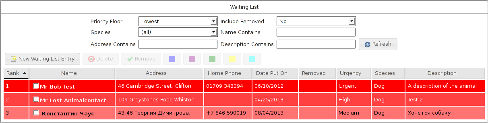
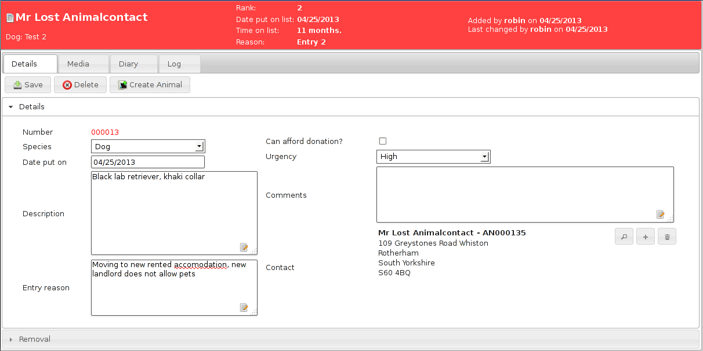

Waiting List¶
Animal Shelter Manager offers you a complete replacement for your paper-based waiting list, tracking owners who want to surrender animals to your shelter when space is available.
It holds information about contacts, the type of animal, whether the owner can afford to make a donation, diaries, logging for phone calls and emails, etc.
Most importantly, the waiting list is capable of assigning an urgency rating to entries and automatically increasing that rating after a configurable amount of time has elapsed to ensure that a queue system can be adhered to.
To open the waiting list screen, go to or press SHIFT+ALT+W if your browser supports it.
Entries are colour coded according to how urgent they are.
Additionally, you can use the highlight buttons to mark interesting entries in upto 5 different colours for other staff members. Each item is given a rank according to how urgent it is and how long it has been on the list. This can be used to tell people where they are on the waiting list. The report Average Time On Waiting List can tell you how long people are waiting on average to get their animals into your shelter.
You can effectively run separate waiting lists per species (turn the option on under on the Waiting List tab) as for most shelters, whether you can take a dog isn’t affected by how many cats you have waiting for example. With this option on, the rankings are calculated separately for each species.
To add a new entry to the waiting list, click the new waiting list button if you are currently viewing the waiting list or select add an animal to the waiting list from the ASM menu. You will be presented with a waiting list entry form to complete.
In addition to the usual add/edit/delete buttons, the waiting list screen allows you to filter the entries that you see according to a particular species, contact name fragment or urgency rating. As with other Animal Shelter Manager tables, you may sort the entries by any column - just click the column name at the top of the list.
If you change your filtering options, click the Refresh button to reload the list with your new filtering options.
As mentioned before, the urgency update period is configurable (see later chapter for configuring the waiting list). By default, the update period is set to 14 days, so every fortnight, each waiting list entry will advance one urgency rating until they get to “High”.
Once an entry reaches “High” it will stay there. The “Urgent” rating can only be set by users and is for extremely high priority waiting list entries.